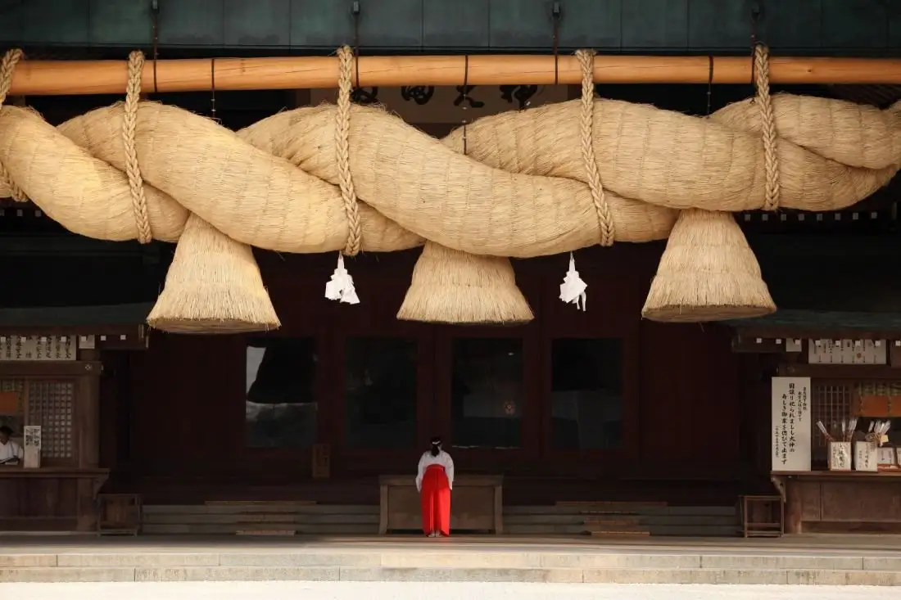
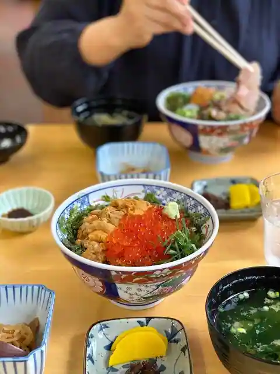
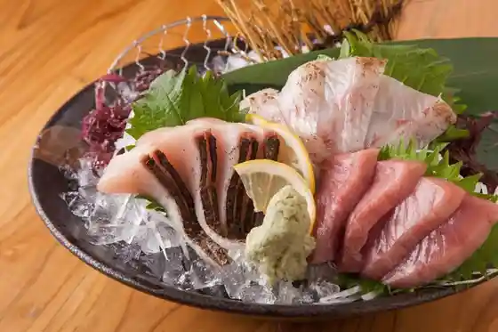

Japan / Shimane / Izumo
Izumo · Shimane
Izumo
Highlighted on the Shimane map.

Izumo City Hall


Sights · Things to do · Places to eat · Places to stay · Day-to-day services
Nearby in Shimane: ← Iinan · Kawamoto →
Other towns: Ama · Chibu · Gotsu · Hamada · Iinan · Kawamoto · Masuda · Matsue · Misato · Nishinoshima · Oda · Okinoshima · Okuizumo · Onan · Tsuwano · Unnan · Yasugi · Yoshika
All towns in Shimane · Back to all prefectures